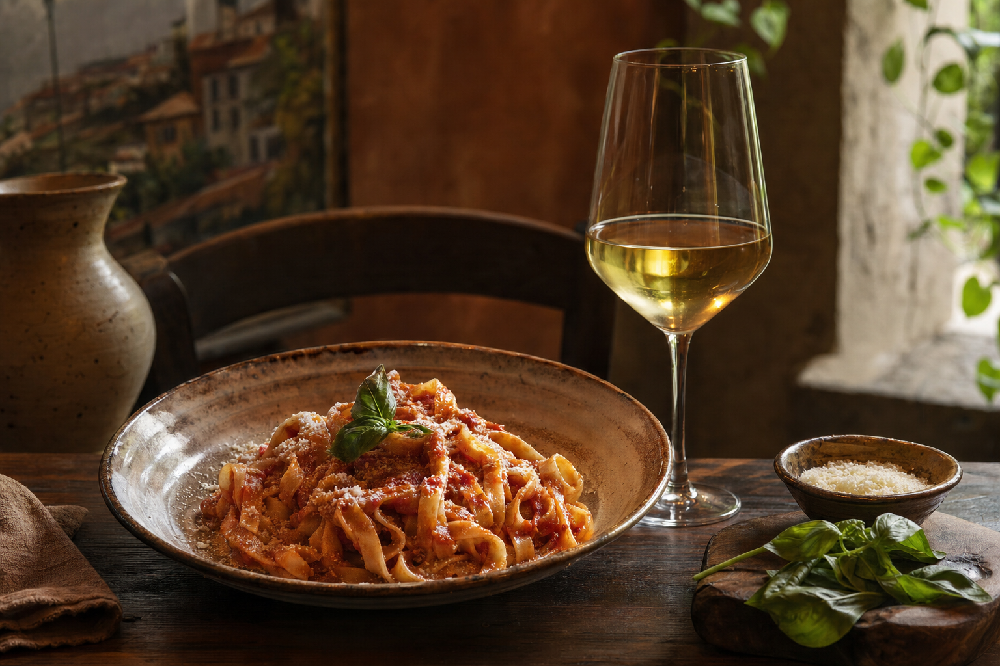
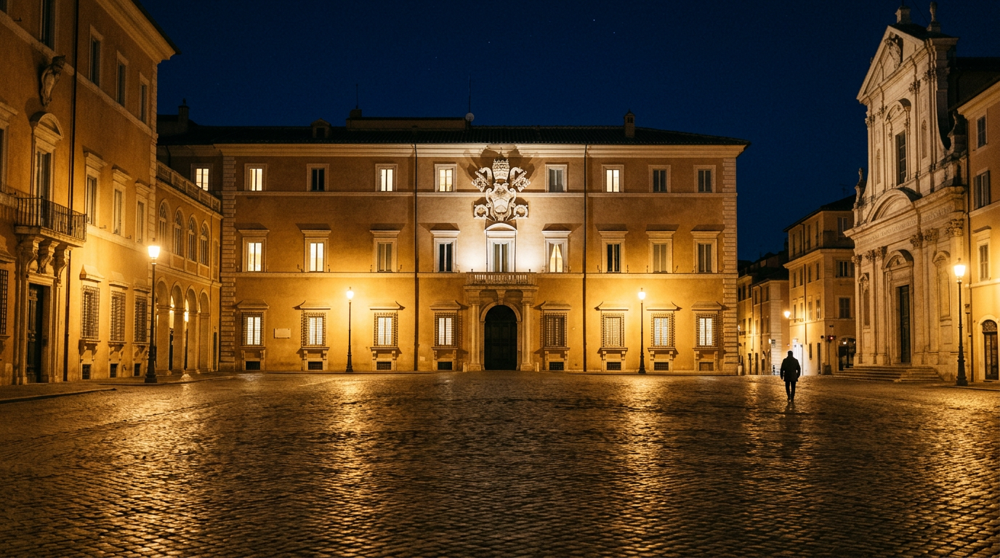

The town of the Popes above the crater.
Four centuries of papal summers, a volcanic lake 168 metres deep and the flavours of the Colli Albani just 25 km from Rome. A complete guide, checked line by line.
A baroque balcony over the volcanic lake.
Castel Gandolfo is a municipality of 8,558 residents perched on the western rim of the Colli Albani caldera. The summer residence of the Popes since 1626, open to the public as a museum since 2016, and inhabited again from July 2026 by Pope Leo XIV. The town, a member of I Borghi più belli d'Italia (Italy's most beautiful villages), is living a new season that brings together art, nature and spirituality.

Apostolic Palace & Pontifical Villas
The summer residence of the Popes, open as a museum with the papal apartments, the gardens of Villa Barberini and the archaeological Antiquarium.

Borgo Laudato Si'
55 hectares of extraterritorial land devoted to integral ecology, open to the public with seasonal guided visits.

Lake Albano
The deepest volcanic lake in Lazio: swimming, kayaking, SUP and a 10 km loop around the shore.

2026 · The return of the Pope to the lake.
On 10 May 1626 Pope Urban VIII inaugurated the papal summer residence in the Palace of Castel Gandolfo. Exactly four hundred years later, on 5 July 2026, Pope Leo XIV crossed the threshold of the Apostolic Palace once more, restoring the tradition of the summer residence after the pause chosen by Francis.
On 12, 19 and 26 July 2026 the Pontiff recited the Angelus from Piazza della Libertà, and in the same month the town celebrated the 90th edition of the Peach Festival (Sagra delle Pesche). A year that brings together spirituality, food and collective memory.
Read the report“In Castel Gandolfo you breathe the air of the Popes and the silence of the lake, an hour's drive from St Peter's.”National Geographic Traveler

Six square kilometres of volcanic water.
Lake Albano covers roughly 6 km² with a maximum depth of 168 metres: it is the deepest in Lazio, formed by the union of two craters. Engines are banned — only pedal boats, kayaks, canoes, SUP and sail.
The 2026 swimming season runs from 1 May to 30 September. The loop around the lake is a CAI ring of about 10 km, walkable or cyclable, with constant views of the town and the pontifical gardens.
Activities & swimmingWhat to catch this season.
A summer that combines centuries-old traditions, spirituality and new cultural events. Mark the dates worth planning around.


The taste of the Castelli Romani.
Porchetta di Ariccia IGP, fettuccine and saltimbocca, sheep's milk cheeses, olive oil from the Colli Albani. And above all the DOC wines: Frascati DOCG, Castelli Romani DOC, Marino DOC and the mineral whites of the craters.
The peaches of Castel Gandolfo, exceptionally sweet, are the stars of the century-old July festival. The traditional fraschette — rustic wine taverns — around the lake serve simple Roman cooking with glasses of house wine.
Selected restaurantsSelected for you.
From historic hotels overlooking the lake to rural houses in the hills: a short list of verified properties, with details, distances and features.
Hotel Castel Vecchio
A historic hotel facing the lake, among the most iconic in town. 24 km from central Rome.
Villa degli Angeli
A country house in the hills, with traditional cooking and a spa looking out over the vineyards of the Castelli.
Palazzo Pontificio Suites
Elegant apartments in the heart of the town, steps from Piazza della Libertà.
Casale sul Cratere
A rural house with vineyard and olive grove, zero-kilometre cooking and Frascati DOCG tastings.
Stories from the town and the lake.
Long reads, curiosities and editorial reporting. From papal history to the geological secrets of the crater, and the figures who have lived on these hills.

The return of Pope Leo XIV to Castel Gandolfo
After ten years, the Apostolic Palace is a summer residence again. A report from 5 July 2026.

The crater that filled with water
Why is Lake Albano so deep? A journey through 600,000 years of the Colli Albani caldera.

The Pope's peaches: 90 years of the festival
How the Peach Festival began and why it still fills the town every July.
Plan your weekend at the lake.
Less than 40 minutes by train from Roma Termini, a €2.20 ticket. A weekend of lake, town, art and food.